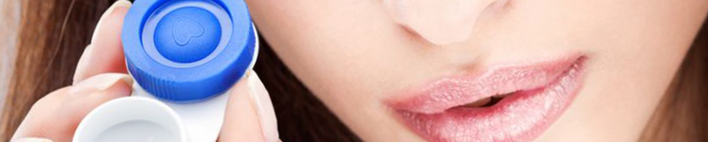

Отзывы потребителей (11 отзывов)
Контактные линзы iWear DR Basic 01
Купила эти линзы во время черной пятницы в «Линзмастере». Брала просто не задумываясь: еще бы, 400 рублей за 6 линз. Это же просто находка! Но линзы того не стоят вообще. Особенно если учесть, что сейчас их цена – 700 рублей. Неприятные ощущения в глазах, хотя все параметры мои. И такое ощущение, что в них зрение хуже, чем в других линзах с аналогичными диоптриями. Прочитала на другом форуме, что за этими линзами прячутся линзы Maxima. Вроде бы, «Линзмастер» у них заказывает и перепаковывает в свои коробочки. Не знаю, так это или нет. Но конкретно эти линзы не рекомендую.
Плохо. Неудобные линзы и недешевые
Достоинства: относительно недорогие
Недостатки: сухость и дискомфорт
Я так поняла, линзы этой марки продаются только в «Линзмастере», где их усердно предлагают. Вот я и повелась на уговоры и купила упаковку из трех пар месячного ношения. Со скидкой они обошлись мне примерно в 600–700 рублей за пару. Относила нормально, за одним «но»: линзы неудобные, в глазу чувствуются, и глаза от них устают. К концу дня вообще глаза режет и хочется побыстрее их снять. Честно говоря, я уже вообще думала, что такой эффект будет от всех линз, но нет, поменяла сейчас на «Оазисы» – и нет слов как довольна, хотя стоимость у них выше, конечно. Но и, извините, 700 рублей – тоже не даром, а дискомфорт существенный за свои же деньги получаешь. Страна, которая делает линзы, – это Великобритания: звучит солидно, а по факту ничего примечательного. Сами линзы светло-синего цвета, в целом их удобно снимать, надевать, но вот сухость и неприятные ощущения от ношения никуда не деть. Поэтому, конечно же, больше их покупать не стану.
Контактные однодневные линзы iWear DD Supreme X – однодневные линзы iWear
Достоинства: не нашла
Недостатки: дискомфорт и неудобство во время использования
Я уже писала о том мучительном опыте подбора линз, но еще не поясняла, что же за линзы мне подобрали. Так уж вышло, что моими линзами оказались iWear DD Supreme X, однодневки. Эдакий приватный бренд, который выпускает под своей маркой линзы известных производителей. Но это я узнала уже потом, после покупки :(, иначе бы не купила, тем более за такие деньги, но, как я уже писала в своем отзыве о подборе линз (сверху), была введена в заблуждение офтальмологом «Линзмастера» тем, что линзы самые лучшие, что я неправильно ими пользуюсь (надеваю), да и вообще, что мне дискомфортно из-за «сухого глаза» и привычки к другим линзам длительного ношения. Как бы там ни было, я все же купила линзы стоимостью 1500 рублей за 15 пар. Но основной причиной покупки было, как я уже писала в предыдущем отзыве, желание взять их с собой в «теплые края», вроде как, все равно на выброс, подумала, что не трудно, денек поносил и выбросил, главное же, что диоптрия подходит, и все. А вот и не главное. Линзы iWear DD Supreme X, под коими скрываются Maxima 1-Day Premium, что стало известно благодаря таблице соответствий, сами по себе, может, и неплохие линзы. Встречаются же положительные отзывы об использовании, только неприятно, что, покупая линзы, никто не знает, что за сюрприз под маркой iWear, да и что мне мешает купить напрямую Maxima 1-Day Premium, а не их же, переложенных в другую упаковку с логотипом iWear (если я правильно поняла), да еще и примерно на 500 рублей дороже? В общем, когда прочитала все, невзлюбила эту марку, а вместе с ней и пропаганду ее в «Линзмастере», как и сам «Линзмастер». Сами же линзы имеют диаметр 14,1 мм, что для меня, в сочетании с радиусом кривизны, оказалось многовато. И мое «может, поношу» не получилось, так как линзы (если сравнивать с теми же «Акувью») намного толще. Очень сильно прилипает к глазу, не увлажняет его, несмотря на влагосодержание 56% и пропуск кислорода 86,0 dk/t, поэтому снимать линзу приходилось с дискомфортом. Даже сумев разместить линзу на глазу так, чтобы она не скомкалась, я получила искаженную картинку и потерю остроты зрения в данных линзах. Поняла, что щурюсь и не вижу половины из того, что видела в своих предыдущих линзах длительного ношения. Иными словами, линзы оказались совершенно мне не подходящими. Было жалко почти полную пачку линз, и я пыталась обменяться линзами в интернете, даже в ущерб себе, но желающих не оказалось. Вот и пришлось выкинуть. Я не могу не рекомендовать Maxima 1-Day Premium, так как напрямую их не пробовала, а то, что в упаковке iWear DD Supreme X находились именно они, нигде не написано, кроме таблицы соответствий в интернете, но я бы не стала полностью за нее ручаться и сказала бы так: «... в этой упаковке линзы неизвестной мне фирмы, и я не могу гарантировать, что в другой упаковке iWear DD Supreme X будут те же самые линзы, что и в моей. Тем не менее на упаковке написано iWear, а значит, непосредственно к iWear мое доверие подорвано, я бы не стала пользоваться этой фирмой-производителем и рекомендовать ее».
Контактные однодневные линзы iWear DD Supreme X – брать не стоит!
Достоинства: нет
Недостатки: дорого, некомфортно, неудобны в использовании
Совсем недавно я решила перейти с ношения очков на ношение контактных линз. Обратившись к офтальмологу и пройдя процедуру по подбору линз, я приобрела себе однодневные контактные линзы iWear DD Supreme X. Купила именно однодневные, так как не хотела заморачиваться с их уходом. Упаковка содержит тридцать линз, то есть ее вам хватит всего на пятнадцать дней. Удовольствие от однодневных линз достаточно дорогое – упаковка стоит 1600 рублей. На месяц вам потребуются две упаковки, и это 3200 рублей. Линзы находятся в индивидуальных блистерах, на которых содержится полная информация о линзе – от содержания раствора, в котором она находится, до окончания срока ее годности. Сама линза силикон-гидрогелевая, мягкая, прозрачная. На линзе нет никаких условных обозначений с определением ее стороны, что не очень удобно человеку, который недавно начал носить линзы. Когда надела линзы, первый эффект от них меня поразил, линзы гораздо удобнее очков, у меня в буквальном смысле слова поменялся взгляд на окружающий мир. Однако от этих линз у меня постоянно сохли глаза и приходилось пользоваться дополнительно специальными каплями, было ощущение дискомфорта, как будто у меня в глазах что-то есть. Снимать данные линзы крайне неудобно, так как линза очень тонкая, мне постоянно не удавалось ее подцепить. У однодневных линз есть весомый плюс – для них не нужно покупать специальный раствор, не нужно промывать и постоянно следить за сроком использования. Но в то же время если случайно уронила однодневную линзу, ее придется заменить, в отличие от тех же многоразовых, которые можно промыть раствором и снова носить. Итог моего эксперимента с линзами iWear DD Supreme X: однодневными линзами данной марки я больше пользоваться не буду, они мне не подходят как по ощущениям, так и по ценовой политике. Я продолжу свои поиск идеальных однодневных линз.
Контактные однодневные линзы iWear DD Supreme X – ненавижу «Линзмастер»
Достоинства: ну, вроде, вижу в них
Недостатки: дискомфорт, сохнут, левым глазом вообще невозможно вверх смотреть
Иногда нужно уметь терпеть – я не смог. Обычно использую линзы 1-Day ACUVUE® TruEye. Только по выходным надеваю линзы, бывало, даже засыпал в них, но все было прекрасно. Максимум, что было, – это подсыхали. Капал, и все норм. Подсыхали после почти 12 часов ношения. Сидели идеально, не съезжали, и именно их всегда беру. Ходил по магазинам, и тут вот приперло мне перед выходными купить линзы, пошел в «Линзмастер» (где дорого очень, но пошел), и тут мне начали впаривать эти линзы. Честно? Сейчас готов в голову дать той мадам-окулисту, которая мне их все же впарила. Так, чтобы вы знали: «Акувью» можно купить в специальном автомате примерно за 1300–1500 рублей, через интернет заказать – 1000–1300 рублей, в «Линзмастере» они стоят 1900 рублей! Вот эти iWear – 1800 рублей! Я готов был купить за такую сумму «Акувью», но подходящих для меня не оказалось. Хотел уйти, но тут мне разрекламировали iWear. Примерил, сказал, что испытываю дискомфорт, на что мне сказали, что это просто с непривычки, что они, мол, премиум-линзы и лучше «Акувью». Ну, думаю, ладно, нужны линзы... Жалею жутко теперь! И денег жалко, и глаз своих. На выходных поеду в магазин и швырну им эти линзы. Деньги, конечно же, никто мне не вернет, но такие линзы и даром не нужны.
Контактные линзы iWear XR Supreme – все познается в сравнении
Достоинства: адекватная цена
Недостатки: неудобные, сохнут края, вызывают чувство тяжести и сухости в глазах
Относительно недавно решила перейти на линзы и была несколько разочарована тем, что они в глазу чувствуются и доставляют определенный дискомфорт. Сначала я попробовала одну марку, затем, в «Линзмастере», посоветовали вот эту. Подобрали с учетом радиуса кривизны, со значением 8,6, и все равно это ситуацию не спасло. Как только надеваешь – все нормально, но уже минут через пять края линзы начинают подсыхать и появляются неприятные ощущения в глазу, которые абсолютно никуда не исчезают в течение дня. А к концу дня так вообще появляется такое ужасное чувство тяжести, что, придя домой, я сразу же бежала их снимать. В отличие, кстати, от линз «Акувью Оазис», которые я купила на смену iWear. Это совсем другое дело! Даже вечером я о них вспоминаю чисто логически: ах, ну да, я хорошо вижу без очков, значит, я в линзах )) И это еще учитывая, что я пока ношу пару, которую дали бесплатно примерить в салоне, и радиус кривизны у нее чуть больше, чем надо. В общем, вывод для меня очевиден: я перехожу на «Оазис» и экспериментировать больше не желаю. Понятно, что линзы – предмет индивидуальный, но исходя из своего опыта iWear рекомендовать не буду. Плюс, я смотрю, и у остальных авторов отзывов здесь об этих линзах мнение такое же. И «Линзмастеру» – отдельный привет, больше я туда не ходок.
Контактные линзы iWear XR Supreme – не очень удобные и приятные в ношении линзы
Достоинства: это линзы!
Недостатки: слишком мягкие, быстро сохнут глаза, ощущение песка в глазах
Это были мои первые линзы. Врач, которая мне в «Линзмастере» подбирала контактные линзы, сослалась на то, что это самая последняя и уникальная разработка, «только для ваших глаз», мягкая, удобная, замечательная. Хотя производитель – Maxima. По факту ношения и сравнения с другими линзами: iWear – слишком мягкие, поэтому надевать их тяжеловато, особенно начинающим. Они не сразу садятся на глаз, легко рвутся при механической очистке, цепляют на себя песок летом очень быстро. Сами глаза сильно сохнут, быстро появляется и не проходит ощущение песка в глазах, глаз раздражен. Отдельно – но про это я напишу в другом отзыве – можно отметить то, что эти линзы продаются преимущественно в сети оптик «Линзмастер». В других точках купить их практически нереально.
Контактные линзы iWear XR Supreme – мне не подошли
Достоинства: цена, количество пар в пачке
Недостатки: качество оставляет желать лучшего
Здравствуйте! Я ношу линзы с 2004 года. За столько времени много чего перепробовала, но всегда возвращалась к марке Сiba Vision. Однако не переставала искать что-то новое. С линзами iWear я пыталась дружить два раза. И оба опыта оказались неудачными. В первый раз мне их порекомендовал офтальмолог как замену моих линз «старого» поколения. Сказал, что линзы данной фирмы – это уже новейшее, пятое, поколение, они очень удобны. Поверила. Купила. Цена оказалась ниже, чем у моих предыдущих линз. В пачке три пары. Казалось бы, выгода налицо. Но не все так гладко. Носила два месяца, на третий меня не хватило. Глаза сильно уставали. Линзы жесткие, к вечеру начинали краснеть глаза и было ощущение, что в них весь песок со всех стройплощадок насыпали. Днем такое впечатление, что в глазах не линзы, а что-то попало и мешает. В итоге я натерла внутреннее веко. Выбросила и вернулась к старым линзам. Вторая попытка также была провалена. При покупке очередной пачки мне дали в подарок на пробу уже знакомые мне iWear. Ну думаю, а вдруг? Нет. За год ничего не изменилось. Ощущения, как и при первой попытке. Печально.
Контактные линзы iWear XR Supreme – жутко неудобные
Достоинства: недорогие
Недостатки: слишком толстые, неудобно надевать, мешаются, слезятся глаза
Эти линзы купила случайно – моих просто не было, а аптекарь посоветовал эти – «недорогие и, вроде, хорошие». Лучше бы я обошла еще пару оптик и нашла свои. Линзы ношу не первый год, поэтому глаза давно к ним привыкли и нет никакого чувства дискомфорта. Но эти превзошли все возможные ожидания. Во-первых, они ужасно плотные и толстые, как будто кусок силикона уплотненный. Во-вторых, из-за этого их очень тяжело надевать. В-третьих, когда, преодолев все трудности, их удается надеть, они мешают. Вообще, нормальные линзы, в принципе, не чувствуешь в глазу, но эти – как будто в глаза засунули кусок пластика. Ну и, как следствие, глаза устают за пару часов и начинают слезиться. У меня в первый же день было дикое желание просто избавиться от них прямо посреди улицы. В общем, не советую никому таких мучений.
Контактные линзы iWear DD Comfort Pro – линзы не понравились, не рекомендую
Достоинства: нет
Недостатки: не держат форму, трудно надевать, недешевые, создают дискомфорт глазам
Прониклась пиаром от чудо-«офтальмологов» из «Линзмастера» и купила себе якобы британские сверхсовременные линзы iWear DD Comfort Pro, в которых и глаз-то дышит, и носить-то их едва ли не полезно для здоровья... В итоге очень недовольна. Линзы слишком тонкие, мнутся на пальце, одеть тяжело, в глазу постоянное ощущение дискомфорта, физраствор пришлось докупить отдельной банкой, так как жидкости в контейнерчике для линзы не хватает. Купила по акции, на два месяца, просто ждала, когда же они закончатся. Линзы недешевые, уже позже в интернете нашла много негативных отзывов. Надеюсь, и мои два месяца мучений с ними кому-то помогут не потратить деньги зря. Мне есть с чем сравнить, я использовала много разных линз и по марке, и по времени ношения. Таких ужасных не было никогда.
Контактные линзы iWear DD Comfort Pro – если вам дороги ваши глаза, покупать не советую
Достоинства: если вы мазохист, то продукт для вас
Недостатки: ощущение постороннего предмета в глазу, сухость, покраснение, цена
Все время покупала линзы одной фирмы, а тут что-то решила перейти на iWear DD Comfort Pro. Линзы категорически не понравились, ибо мне все время пекло в глазах. Во-первых, пока надела их, потратила кучу времени. Потом еще и пришлось капать в глаза искусственные слезы, чтобы хоть как-то облегчить ситуацию, но увы: моим глазам как было неудобно, так они и остались в этом дискомфорте. Не выдержала и прямо на учебе сняла их и выбросила. Так пока снимала, чуть глаз не выплакала. В итоге весь день глаза пробыли в ужасном состоянии, пришлось дома делать компресс из чая. Только после сна все прошло. О том, что потратила приличные деньги, думаю, вы догадались. В общем, не советую покупать iWear DD Comfort Pro.